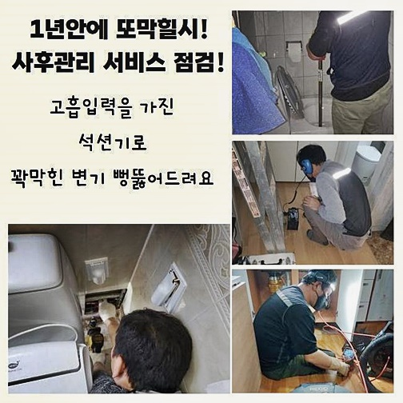
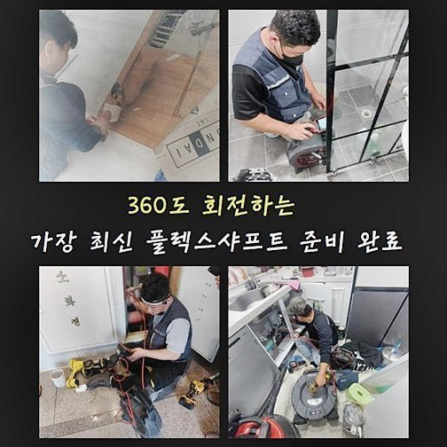
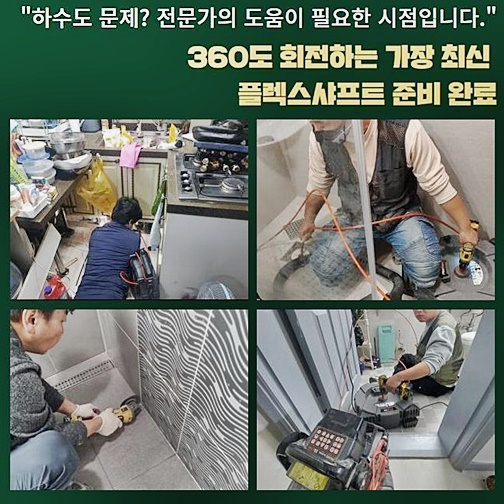
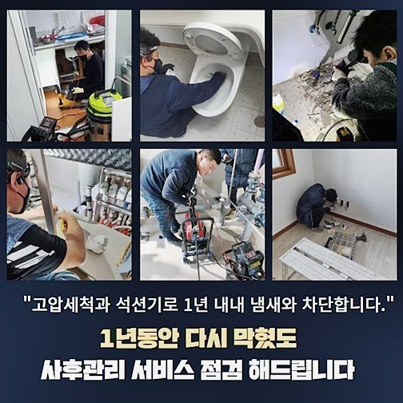
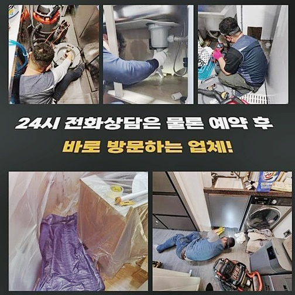
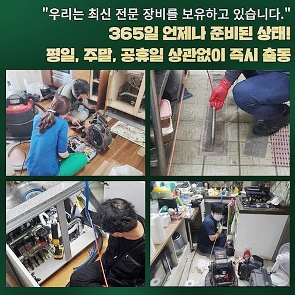
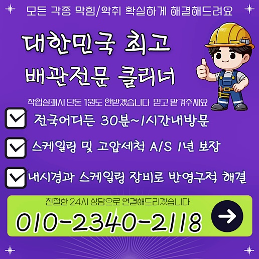

🏠 중구 회현동대변기막힘 광희동 하수구청소장비 설비공사
용인 변기막힘 전문 시공 후기

📋 작업 개요
- 위치: 용인
- 서비스 유형: 변기막힘, 하수구막힘, 배관막힘, 집수정막힘, 역류해결, 뚫는업체, 배관청소, 고압세척, 설비공사, 배관보수
- 작업 일시: 2024. 8. 24. 16:28
- 업체명: 하수구수사대 (010-5615-2118)
🔍 문제 상황
중구 회현동대변기막힘 광희동 하수구청소장비 설비공사
집안에 설치된 하수관을 쓰다 보면 다수의 이유가 축적되다가 결국에는 물 흐름이 끊기는 현상이 어쩔 수 없이 생길 수 있습니다
식당이나 가정집 등 여러 타입의 건물들에서 하수구가 중단되는 상황은 쉽게 탄생하며 지금도 생기고 있겠죠!
수로의 회복을 위하여 전문 업체가 필요하다면 필수적 장비라인업이 마련되어 원인을 철저히 규명한 뒤 세심하게 시공하는 곳을 택해야만 좋은 결과를 얻을 수 있어요
얼마 전 내방드린 현장은 하루에도 수백명이 이용하는 건물 내부의 화장실이었는데 물이 어느순간 막혔다며 빠른 출동이 가능하냐 물어보셨어요
건물의 이용객 모두가 수차례 들락날락하기 때문에 거주목적의 건물 보다는 막힘에 대한 사고가 자주 자주 나타나는 게 당연합니다
오늘 현장을 담당하신 고객님은 이용이 어려운 수준으로 고장이 났던 경험은 난생 처음 마주하게 된 것이라며 곤혹스럽다는 것을 알려주셨어요
공용 시설이다보니 많은 분들이 각자 다용도로 사용하는 화장실이었으므로 긴급한 수선이 들어가야 한다고 여겨져 당일에 오류를 교정해 나갔어요
일상적인 막힘이라는 접수를 하고 내방드리면 막힘을 촉발하는 대상들은 스펙트럼이 넓게 나와서 구체적인 조사에 들어가여 동기가 되는 씨앗을 찾아내는 곳을 찾는 게 최선입니다!
공용화장실에 들어가서 장치를 모두 깔아두고 무슨 문제가 내부에 자리했으며 현상의 심각도에 대해서 살펴보기 시작했네요
여러 하수구를 뚫다보면 내부 점검만 거치고도 원만하게 조치를 취할 수 있는 곳이 문제가 생겼다면 수월하지만 내외부의 하수구를 전적으로 고찰하여 시공을 수행해야만 결론이 나는 때도 있어요

🔎 원인 분석
💡 전문가 진단: 정밀 진단 장비를 사용하여 슬러지의 고착 여부를 판명하고 타격/세척 작업을 실시했습니다.
오늘 소개드리는 곳 역시 옥외 하수구까지도 오염이 진행된 바람에 실시했던 작업의 수준 자체가 원만하지는 않았네요
부패로 인하여 썩은 내가 공기에 자욱하게 퍼져버린 상황인데다 심지어 역행까지 오염되어 있었기에 내측의 현황 분석부터 시행해야만 답이 나오겠다 싶었어요
불쾌한 악취가 스믈스믈 올라오는 장소부터 시작해서 일단 타겟팅을 해서 봤는데 뿌옇게 오염된 잔수부터 찌꺼기들로 인하여 물이 이동하기 난감한 컨디션이었어요
배관이 한 줄기 같아보여도 바깥으로 향하는 굵은 관으로 연계되어있는 시스템이면 한 구멍만 막히더라도 전체적인 작동 불능이 얼마든지 일어날 수 있어요
검토에 들어간 한 구멍만 검토해 봐도 본 하수구 시설이 위중한 경우라는 점을 알아차릴 수 있었어요
파이프 안에 많은 토사가 가득 침범한 상태인데다 통로를 가득 메우고 있어서 여기로 관측 장치를 주입하는 일도 힘들만큼 통로가 협소했어요
약간의 물길을 내기 위해서 상단의 찌꺼기를 걷어올리고 장치가 진입할 수 있는 이동 통로를 뚫어서 디테일하게 탐색을 해주었습니다
하수구의 곤란을 마주하여 정보를 검색하시던 분들 중 다급하신 마음에 클리너같은 셀프 대책을 도전하시기도 하는데요
다양한 매체에서 추천하는 뚫는 방안만으로는 원활한 배수 시스템 회복은 사실상 불가능에 가깝습니다
내부에 고인 이물들은 시간이 흘러가면 엉겨붙은 채로 배관과 밀착되어 한몸이 되니 철거 시에 막대한 데미지를 초래할 수 있습니다
게다가 뭉쳐있는 정도롤 더욱 나쁘게 전락시킬 수 있으니 신중히 판단하여 능수능란한 기술력을 갖춘 숙련자에게 설비를 맡겨서 해소를 해보셔야 합니다
마치 청소기처럼 쓰는 석션기는 흡수능력이 강한 장비인 만큼 빈틈 없이 채워져 있는 찌꺼기들도 어려움 없이 끄집어 낼 수 있는 겁니다

🔧 작업 과정
배수구를 덮고 있는 철망을 개방한 뒤에 석션을 싹 돌려보니 입이 떡 벌어질 정도의 무수한 양의 오염원들이 내부에 고여 있었습니다
다음은 옥외로 향하는 경로도 빠지지 않고 촬영을 이어가 봤더니 가운데 측면이 통제되어 버린 장면을 목도하게 됐네요
물이 빠져나가는 길목 자체가 딱히 널널하지 않은 상황인데다 장기간 누적된 잔량들이 단단히 박혀서 배출 통로를 옥죄고 있는 상태였습니다
조금씩 유입된 작은 입자들이 눈덩이처럼 불어나서 배수가 이뤄지지 못하고 내압을 못견뎌 역류까지 야기되었다고 추론됐네요
아까보단 넓은 통로로 석션기의 위치를 정해주고 세정 업무를 담당했더니 아까보다 곱절은 더 많이 불쾌한 찌꺼기들이 호스로 빨려 들어가서 쏙쏙 올라오는 게 보였죠
많은 하수구를 다루다 보면 파이프 벽을 따라 오물이 말라붙은 형상도 제법 자주 보이는데요
오염이 오래 될수록 더더욱 손쉽게 청소 방식만 가해서는 상황을 극복하기 어렵습니다
마치 정상화가 된 것처럼 느껴지다가도 이내 또다른 막힘이 도래할테니 소비되는 자원만 괜히 허비되는 결과를 부르겠죠
옥외에 위치한 큰 집수정까지 일제히 마비될 때가 많아서 한 군데도 소홀하지 않게 놓치지 말고 세척해야 합니다
배수로의 낡음 정도와 효율적인 작업 계획을 세워서 방해요소를 모두 척결하는 세척 단계를 리드하게 됐어요
넓은 영역이 더럽혀졌으면 유발되는 악취의 수준도 점차 농후해 질 것이므로 가볍게 생각하지 말고 지체하는 시간 없도록 보수에 뛰어들어야 해요
이번 현장은 내면까지도 오염물질이 딱 달라붙어서 흔들림 없이 유지됐기에 보다 센 물줄기를 발사해서 상황을 타개해 보기로 결정했어요
고온의 물줄기를 부착된 오물을 기점으로 쏴서 일반 스케일링 장비로는 긍정적인 결과물을 창출해내지 못한 잔여한 찌꺼기들을 즉시 떼내고 녹여내 주는 것을 고압수가 해결해 줍니다
마당에 있는 정화조거나 배수 문과 같은 때에는 소규모의 장비만 동원해서는 나아지지 않는데 이때 이런 고압 이용이 가능한 장비를 사용하면 효율이 높아요
한몸처럼 합체된 찌꺼기가 있다면 수압을 높여 문제 부위가 해결될 수 있도록 완벽주의로 작업한 덕분에 침전물이 없어지는 것을 결국 얻어낼 수 있었어요
고압수를 쏘는 절차로 청소해 나갔더니 종국에는 몰라보게 말끔하게 변해서 체증이 내려갈 정도였는데요
사용빈도가 많지는 않지만 다른 툴들을 오래 사용하는 것보다 하수구에 누적되어 온 노폐물을 일시에 소거할 수 있으니 현장의 안팍에서 쓰고 있네요
옥외 시설물의 청소를 끝마치게 된다면 화장실로 들어가서 물의 배출이 정상화 되었는지 마무리 검사를 수행하는데요
내부의 고착화된 물질들을 정비했더니 근처에서 이미 확산될대로 됐던 냄새도 킁킁대도 느껴지지 않게 되자 고객님도 만족스러운 표정을 지어주셨어요


✅ 작업 완료
일상에서도 하수관의 고장은 어디에서든 갑작스레 늘상 겪을 수 있는 증세이니 스스로 고치기보다는 프로에게 맡기는 걸 추천드려요
풍부한 현장 경력을 기반으로 보수 후에도 관리를 지속해주는 업체로 최종 결정을 보시기 바랍니다
유사한 사유로 인해서 방문해도 건물마다 구조와 형상이 다르고 배수관 구성도 차이점을 보이기 때문에 다수의 요인들을 분석해 보고 방향을 정하는게 중요합니다
막힌 요인을 명확히 발굴해서 하나하나 소거해 나가는 전문진을 찾으셔야만 최상의 만족을 마음껏 누리실 수 있을 것입니다
급하실 때 바로 전화주신다면 진심을 담아서 상담 해드릴게요




⚠️ 하수구 배관 막힘 예방 및 관리 가이드
- ✅ 머리카락, 비닐, 물티슈 등 물에 분해되지 않는 이물질은 하수구 유입을 절대 금지해 주세요.
- ✅ 하수구 거름망을 씌우고 모여진 이물질은 주기적으로 쓰레기통에 바로 비워주셔야 합니다.
- ✅ 배관 노후가 심할 경우 이물질이 더 쉽게 걸리므로 주기적인 배관 세척(고압세척 등)을 권장합니다.
- ✅ 작업 후 1년 이내 재발 시 하수구수사대에서 무상 A/S 보증 서비스를 제공합니다.
💡 핵심 정리
- 확실한 장비 작업(내시경 점검 및 샤프트 스케일링)으로 원인을 뿌리 뽑습니다.
- 작업 후 1년 이내에 동일한 부위 재발 시 100% 무상 A/S 서비스를 보장합니다.
- 서울 · 경기 · 인천 전 지역에 24시간 언제든 긴급 출동할 수 있도록 항시 대기 중입니다.
❓ 자주 묻는 질문 (FAQ)
🚨 용인 변기막힘 문제로 고민이신가요?
정확한 원인 진단과 확실한 시공으로 재발 없는 해결을 약속드립니다.
24시간 긴급 출동 | 서울 · 경기 · 인천 전지역 | 1년 내 재발 시 무상 A/S